공조냉동기계산업기사 (2012-03-04 기출문제)
1과목: 공기조화
1. 다음 중 용어와 단위가 잘못 연결된 것은?
- 열수분비 - %
- 음의 강도 –watt/m2
- 비열 –kcal/kg℃
- 일사강도 –kcal/m2h
(정답률: 74%)

2. 다음 중 실내 발열부하가 아닌 것은?
- 펌프부하
- 조명부하
- 인체부하
- 기구부하
(정답률: 84%)
3. 열원방식의 특징으로 맞는 것은?
- 흡수식 냉동기 : 피크전력부하 경감
- 축열방식 : 심야전력 이용곤란
- 지역냉난방방식 : 대기오염 심각
- 열펌프 : 폐열발생
(정답률: 73%)
4. 에어와셔의 엘리미네이터의 더러워짐을 방지하기위해 상부에 설치하여 물을 분무하여 청소를 하는 것은?
- 플러딩 노즐
- 루버
- 분무 노즐
- 스텐드 파이프
(정답률: 74%)
5. 클린룸 설비에 있어 실내기류에 따른 방식에 해당되지 않은 것은?
- 수직층류 방식
- 수평층류 방식
- 비층류 방식
- 직교류층류 방식
(정답률: 72%)
6. 지붕 구조체의 열관류율 0.48(W/m2℃), 면적200m2, 냉방부하온도차(CLTD)34℃, 실내온도 26℃ 일때 관류에 의한 냉방부하는 얼마인가?
- 768W
- 2496W
- 2880W
- 3264W
(정답률: 45%)
7. 보일러에서 연료를 연소하는 데에는 연소에 필요한 산소량을 알면 공기량을 산출할 수 있지만, 이 공기량 만으로는 완전연소가 곤란하다. 따라서 연료를 완전 연소시키기 위해서는 더 많은 공기가 필요한데, 실제로 필요한 공기량과 이론적인 공기량은 비를 무엇이라 하는가?
- 실제공기계수
- 연소공기계수
- 공기과잉계수
- 필요공기계수
(정답률: 75%)
8. 온도 30℃ 습공기의 절대습도는 0.00104kg/kg이다. 엔탈피(kcal/kg)는 약 얼마인가?
- 10.1
- 9.2
- 8.6
- 7.8
(정답률: 41%)
9. 냉수 코일 설계에 관한 설명 중 옳은 것은?
- 대수 평균 온도차(MTD)를 크게 하면 코일의 열수가 많아진다.
- 냉수의 속도는 2m/s 이상으로 하는 것이 바람직하다.
- 코일을 통과하는 풍속은 2~3m/s가 경제적이다.
- 물의 온도 상승은 일반적으로 15℃ 전후로 한다.
(정답률: 83%)
10. 덕트의 설계에서 고려해야 할 사항으로 맞는 것은?
- 취출구 또는 흡입구와 송풍기까지는 가능한 길게 설계한다.
- 덕트의 굴곡이나 변형 등 저항 증가 요소를 많게하여 송풍 동력을 증가시킨다.
- 극장, 방송국, 스튜디오 등에는 반드시 고속덕트로 설계하여 공기조화목적을 달성할 수 있어야 한다.
- 덕트내의 압력손실은 덕트공의 기능도, 접합방법등에 의하여 달라질 수 있기 때문에 주의하여야 하며 각 덕트가 분기되는 지점에 댐퍼를 설치하여 압력의 평형을 유지 할 수 있도록 한다.
(정답률: 82%)
11. 실내취득열량 중 현열이 25000 kcal/h일 때, 실내 온도를 26℃로 유지하기 위해 14℃의 공기를 송풍하고자 한다. 송풍량은 약 얼마(m3/min)인가? (단, 공기의 비열은 0.24 kcal/kg⋅℃, 공기의 비중량은 1.2 kg/m3로 한다.)
- 7233.8
- 10416.7
- 173.6
- 120.6
(정답률: 42%)
12. 변풍량 단일덕트 방식(VAV 방식)에 대한 설명 중 틀린 것은?
- Zone 또는 각 방마다 설치한 변풍량유닛에 의해 실내기류에 따라 송풍량을 조절하는 방식이다.
- 동시 사용률을 고려하여 기기용량을 결정할 수 있으므로 설비용량을 적게 할 수 있다.
- 칸막이 변경이나 부하 증감에 대하여 적응성이 좋다.
- 부분부하 시 송풍기 동력을 절감할 수 있다.
(정답률: 62%)
13. 온수난방의 배관방식이 아닌 것은?
- 역 환수식
- 진공 환수식
- 단관식
- 복관식
(정답률: 72%)
14. 다음 중 용어와 난방방식의 조합이 틀린 것은?
- 리버스 리턴 –온수난방
- MRT –복사난방
- 온도조절식 트랩 –증기난방
- 팽창탱크 –증기난방
(정답률: 77%)
15. 열교환기의 열관류율을 달라지게 하는 인자와 거리가 먼 것은?
- 유체의 유속
- 내구성
- 전열면의 재질
- 전열면의 오염정도
(정답률: 69%)
16. 일반적인 난방부하 계산 시 포함하지 않는 난방부하 경감요인에 해당하는 것은?
- 침입외기 영향
- 일사영향
- 외기도입 영향
- 벽체의 관류영향
(정답률: 71%)
17. 송풍기에 관한 설명 중 틀린 것은?
- 압력이 10kPa 이하는 일반적으로 팬(fan)이라 한다.
- 송풍기의 크기가 일정할 때 압력은 회전속도비의 2제곱에 비례하여 변화한다.
- 회전속도가 같을 때 동력은 송풍기 임펠러 지름비의 3제곱에 비례하여 변화한다.
- 일반적으로 원심송풍기에 사용되는 풍량제어 방법에는 회전수제어, 베인제어 댐퍼제어 등이 있다.
(정답률: 71%)
18. 구조체의 결로방지에 관한 설명이다. 옳지 않은 것은?
- 표면결로를 방지하기 위해서는 다습한 외기를 도입하지 않는다.
- 내부결로를 방지하기 위해서는 실내측보다 실외측에 방습막을 부착하는 것이 바람직하다.
- 유리창의 경우는 공기층이 밀폐된 2중 유리를 사용한다.
- 공기와의 접촉면 온도를 노점온도 이상으로 유지한다.
(정답률: 78%)
19. 각 실마다 전기스토브나 기름난로 등을 설치하여 난방을 하는 방식은?
- 온돌난방
- 중앙난방
- 지역난방
- 개별난방
(정답률: 90%)
20. 냉방부하에 관한 설명이다. 옳은 것은?
- 조명에서 발생하는 열량은 잠열로서 외기부하에 해당된다.
- 상당외기온도차는 방위, 시각 및 벽체 재료 등에 따라 값이 정해진다.
- 유리창을 통해 들어오는 부하는 태양복사열만 계산한다.
- 극간풍에 의한 부하는 실내외 온도차에 의한 현열만을 계산한다.
(정답률: 77%)
2과목: 냉동공학
21. 20℃ 의 물 1kg을 냉각하여 –9℃의 얼음으로 만들고자 할 때 제빙에 필요한 냉동능력을 구하고자 한다. 이때 필요한 값이 아닌 것은?
- 얼음의 비체적
- 물의 비열
- 물의 응고잠열
- 얼음의 비열
(정답률: 76%)
22. 카르노 사이클(Carnot cycle)의 가역과정 순서를 올바르게 나타낸 것은?
- 등온팽창 → 단열팽창 → 등온압축 → 단열압축
- 등온팽창 → 단열압축 → 단열팽창 → 등온압축
- 등온팽창 → 등온압축 → 단열압축 → 단열팽창
- 등온팽창 → 단열팽창 → 단열압축 → 등온압축
(정답률: 79%)
23. 냉동장치의 안전장치가 아닌 것은?
- 안전밸브
- 가용전, 파열판
- 고압차단스위치
- 응축압력 조절밸브
(정답률: 68%)
24. 원통다관식 암모니아 만액식 증발기의 원통(셀)내의 냉매액은 어느 정도 차도록 하는 것이 적당한가?
- 원통높이의 1/4 ~ 1/2
- 원통길이의 1/4 ~ 1/2
- 원통높이의 1/2 ~ 3/4
- 원통길이의 1/2 ~ 3/4
(정답률: 77%)
25. 냉장고 중 쇼 케이스(show case)의 종류에 해당되지 않는 것은?
- 리칭(reach)형 쇼 케이스
- 밀폐형 쇼 케이스
- 개방형 쇼 케이스
- 유닛소형 쇼 케이스
(정답률: 63%)
26. 일의 열당량(A)을 옳게 표시한 것은?
- A = 472kg • m/kcal
- A = 1/427kcal/kg • m
- A = 102kg • m
- A = 860kg • m/kcal
(정답률: 81%)
27. 프레온 냉동장치에 공기가 유입되면 어떠한 현상이 일어나는가?
- 고압이 공기의 분압만큼 낮아진다.
- 고압이 높아지므로 냉매 순환량이 많아지고 냉동능력도 증가한다.
- 토출가스의 온도가 상승하므로 응축기의 열통과율이 높아지고 방출열량도 증가한다.
- 냉동톤당 소요동력이 증가한다.
(정답률: 65%)
28. 다음 무기질 브라인 중에 동결점이 제일 낮은 것은?
- MgCl2
- CaCl2
- H2O
- NaCl
(정답률: 77%)
29. 할라이드 토치로 누설을 탐지할 누설이 있는 곳에서는 토치의 불꽃색깔이 어떻게 되는가?
- 흑색
- 파란색
- 노란색
- 녹색
(정답률: 85%)
30. 다음은 증발식 응축기에 관한 설명이다. 잘못된 것은?
- 구조가 간단하고 압력강하가 작다.
- 일반 수냉식에 비하여 전열 작용이 나쁘다.
- 대기의 습구온도 영향을 많이 받는다.
- 물의 증발 잠열을 이용하여 냉각하므로 냉각수가 적게 든다.
(정답률: 51%)
31. 진공압력 200mmHg를 절대압력으로 환산하면 약 얼마인가? (단, 대기압은 1.033kgf/cm2이다.)
- 0.52kgf/cm2
- 0.76kgf/cm2
- 1.72kgf/cm2
- 3.52kgf/cm2
(정답률: 64%)
32. 흡수식 냉동시스템에서 냉매의 순환방향으로 올바른 것은?
- 압축기 → 응축기 → 증발기 → 열교환기 → 압축기
- 증발기 → 흡수기 → 발생기(재생기) → 응축기 → 증발기
- 압축기 → 응축기 → 팽창장치 → 증발기 → 압축기
- 증발기 → 열교환기 → 발생기(재생기) → 흡수기 → 증발기
(정답률: 74%)
33. 팽창밸브 직전 냉매의 온도가 낮아짐에 따라 증발기의 능력은 어떻게 되는가?
- 냉매의 온도가 낮아지면 냉매 조절장치가 동작할것이므로 증발기의 능력에 변화가 없다.
- 냉매의 온도가 낮아지면 증발기의 능력도 감소한다.
- 냉매온도가 낮아짐에 따라 증발기의 능력은 증가한다.
- 증발기의 능력은 크기와 과열도 등에 관계되므로 증발기의 능력에는 변화가 없다.
(정답률: 66%)
34. 다음 보기의 내용 중 맞는 것으로 짝지어진 것은?
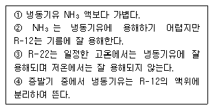
- ①, ②
- ②, ③
- ①, ④
- ①, ③
(정답률: 72%)
35. 1RT 냉동기의 수냉식 응축기에 있어서 냉각수 입구 및 출구 온도를 10℃, 20℃로 하기 위하여 약 얼마의 냉각수가 필요한가? (단, 공기조화용 이며 응축기방열량은 20% 추가 할것)
- 5.5L/min
- 6.6L/min
- 332L/min
- 400L/min
(정답률: 56%)
36. 흡수식 냉온수기에서 기내로 유입된 공기와 기내에서 발생한 불응축가스를 기외로 방출하는 장치는?
- 흡수장치
- 재생장치
- 압축장치
- 추기장치
(정답률: 79%)
37. 왕복동식 냉동기의 기동부하를 경감시키는 방법이 아닌 것은?
- 바이패스 법
- 클리어런스 증대법
- 언로우더 시스템법
- 흡입 댐퍼 조절법
(정답률: 59%)
38. 0℃와 100℃사이의 물을 열원으로 역카르노 사이클로 작동되는 냉동기(ℇC)와 히트펌프(ℇH)의 성적계수는 각각 얼마인가?
- ℇC = 1.00, ℇH = 2.00
- ℇC = 3.54, ℇH = 4.54
- ℇC = 2.12, ℇH = 3.12
- ℇC = 2.73, ℇH = 3.73
(정답률: 73%)
39. 냉장고의 방열재의 두께가 200mm인데 냉각효과를 좋게 하기 위해 300mm로 했다. 외기와 외벽면과의 열전달율이 20kcal/m2h℃, 고내 공기와 내벽면과의 열전달율이 10kcal/m2h℃, 방열재의 열전도율이 0.035kcal/m2h℃이다. 이 경우 열손실은 약 몇 % 감소하는가? (단, 방열재 이외의 열전도저항은 무시하는 것으로 한다.)
- 18
- 33
- 45
- 62
(정답률: 55%)
40. 냉동장치의 온도를 일정하게 유지하기 위하여 사용되는 온도제어기(thermostat)의 방식으로 적당하지 않은 것은?
- 바이메탈식
- 건습구식
- 증기 압력식
- 전기 저항식
(정답률: 60%)
3과목: 배관일반
41. 펌프의 베이퍼록 발생 요인이 아닌 것은?
- 액 자체 또는 흡입배관 외부의 온도가 상승할 경우
- 펌프 냉각기가 작동하지 않거나 설치되지 않은 경우
- 흡입관 지름이 크거나 펌프 설치위치가 적당하지 않을 때
- 흡입 관로의 막힘, 스케일 부착 등에 의한 저항의 증대
(정답률: 62%)
42. 플랜지 관이음쇠의 시트모양에 따른 용도에서 위험성이 있는 유체의 배관 및 기밀을 요하는 배관에 가장 적합한 것은?
- 홈꼴형 시트
- 소평면 시트
- 대평면 시트
- 삽입형 시트
(정답률: 74%)
43. 주철관의 용도로 적합하지 않은 것은?
- 수도용
- 가스용
- 배수용
- 냉매용
(정답률: 67%)
44. 도시가스 입상 관에 설치하는 밸브는 바닥으로부터 몇 m 이상에 설치해야 하는가?
- 0.5m이상 1m이하
- 1m이상 1.5m이하
- 1.6m이상 2m이하
- 2m이상 2.5m이하
(정답률: 77%)
45. 암모니아 냉동설비의 배관으로 사용하지 못하는 것은?
- 배관용 탄소강 강관
- 이음매 없는 동관
- 저온 배관용 강관
- 배관용 스테인리스 강관
(정답률: 83%)
46. 급수설비에서 급수펌프 설치 시 캐비테이션(cavitation) 방지책에 대한 설명으로 틀린 것은?
- 펌프의 회전수를 빠르게 한다.
- 흡입배관은 굽힘부를 적게 한다.
- 단흡입 펌프를 양흡입 펌프로 바꾼다.
- 흡입관경은 크게 하고 흡입 양정을 짧게 한다.
(정답률: 76%)
47. 급수장치에서 세정밸브를 사용하는 경우 최저 필요 수압은 얼마인가?
- 1kgf/cm2
- 0.7kgf/cm2
- 0.5kgf/cm2
- 0.3kgf/cm2
(정답률: 66%)
48. 온수난방에서 역귀환 방식(Reverse ReturnSystem)을 채택하는 주된 이유는?
- 순환펌프를 설치하기 위해
- 배관의 길이를 축소하기 위해
- 열손실과 발생소음을 줄이기 위해
- 건물내 각실의 온도를 균일하게 하기 위해
(정답률: 84%)
49. 관내에 분리된 증기나 공기를 배출하고 물의 팽창에 따른 위험을 방지하기 위해 설치하는 것은?
- 순환탱크
- 팽창탱크
- 옥상탱크
- 압력탱크
(정답률: 84%)
50. 동기관의 종류가 아닌 것은?
- 각개 통기관
- 루프 통기관
- 신정 통기관
- 분해 통기관
(정답률: 75%)
51. 스케줄 번호에 의해 두께를 나타내는 관이 아닌 것은?
- 수도용 아연도금 강관
- 압력배관용 탄소강관
- 고압 배관용 탄소강관
- 배관용 합금강관
(정답률: 70%)
52. 정압기 종류에서 구조와 기능이 우수하고 중압을 저압으로 감압하며, 일반 소비기기용이나 지구정압기에 널리 쓰이는 것은?
- 레이놀드식 정압기
- 피셔식 정압기
- 엠코 정압기
- 부종식 정압기
(정답률: 80%)
53. 개방형 팽창탱크의 특징이 아닌 것은?
- 설치가 어렵고 설치비가 고가이다.
- 산소가 용해되어 배관 부식의 원인 된다.
- 설치 위치에 제약이 따른다.
- 공기배출을 위하여 탱크를 대기에 개방시킨다.
(정답률: 69%)
54. 증기난방의 분류에 해당되지 않는 것은?
- 중력 환수식
- 진공 환수식
- 정압 환수식
- 기계 환수식
(정답률: 69%)
55. 중앙식 급탕방법에 장점으로 맞는 것은?
- 배관길이가 짧아 열손실이 적다.
- 탕비장치가 대규모이므로 열효율이 좋다.
- 건물완성 후에도 급탕개소의 증설이 비교적 쉽다.
- 설비규모가 적기 때문에 초기 설비비가 적게 든다.
(정답률: 72%)
56. 배수 및 통기설비에서 배수 배관의 청소구 설치를 필요로 하는 곳이다. 틀린 것은?
- 배수 수직관의 제일 밑부분 또는 그 근처
- 배수 수평 주관과 배수 수평 분기관의 분기점
- 길이가 긴 배수관의 중간지점으로 하되 100A이상의 배수관은 10m마다 설치
- 배수관이 45° 이상의 각도로 방향을 전환하는 곳
(정답률: 74%)
57. 옥내 급수관에서 20A 급수전 4개에 급수하는 주관의 관경을 정하는 방법 중에서 아래의 급수관 균등표를 사용하여 관경을 구한 것으로 맞는 것은?
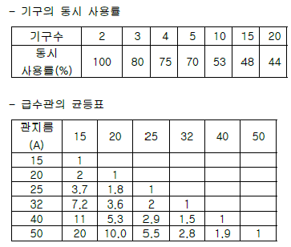
- 25A
- 32A
- 40A
- 50A
(정답률: 70%)
58. 덕트 제작에 이용되는 심의 종류가 아닌 것은?
- 스탠딩 심
- 포켓펀치 심
- 피츠버그 심
- 로크 그루브 심
(정답률: 75%)
59. 온수난방 배관의 분류와 합류를 나타낸 것으로 적합하지 않은 것은?
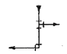
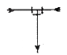
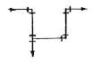
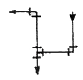
(정답률: 77%)
60. 플레어 관이음쇠에 의한 접합은 어느 관에서 사용 하는가?
- 강관
- 동관
- 염화비닐관
- 시멘트관
(정답률: 72%)
4과목: 전기제어공학
61. 다음의 블록선도와 등가인 블록선도는?
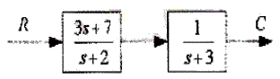
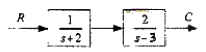
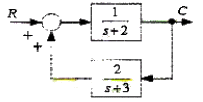
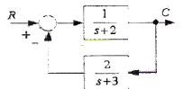
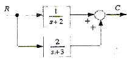
(정답률: 51%)
62. 공기콘덴서의 극판사이에 비유전률 Es의 유전체를 채운 경우 동일 전위차에 대한 극판간의 전하량은?
- 1/E로 감소
- E 배로 증가
- 변하지 않음
- πE 배로 증가
(정답률: 62%)
63. 저항 20 인 전열기에 5A의 전류를 흘렸다면 소비전력은 몇 W인가?
- 200
- 300
- 400
- 500
(정답률: 60%)
64. 제어요소가 제어대상에 주는 양은?
- 기준입력
- 동작신호
- 제어량
- 조작량
(정답률: 63%)
65. 그림과 같은 회로에서 R의 값은?
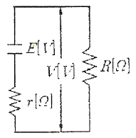
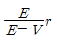
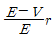
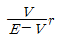
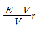
(정답률: 54%)
66. 그림과 같은 게이트회로에서 출력 Y는?
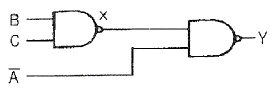
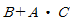
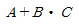
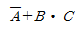
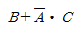
(정답률: 60%)
67. 절연저항 측정에 관한 설명으로 틀린 것은?
- 절연체에 직류고전압을 가하면 누설전류가 흐르는 것을 이용한 것이다.
- 선로의 사용전압에 관계없이 절연저항 측정시 선로에 일정한 전압을 인가한다.
- 절연저항의 측정단위는 ΩM 이다.
- 옥내선로의 절연저항 측정시에는 모든 부하쪽의 선로를 개방해야 한다.
(정답률: 53%)
68. 유기 기전력은 어느 것에 관계되는가?
- 시간에 비례한다.
- 쇄교 자속수의 변화에 비례한다.
- 쇄교 자속수에 반비례한다.
- 쇄교 자속수의 변화에 반비례한다.
(정답률: 67%)
69. 교류 전기에서 실효치는?
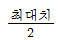
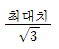
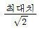
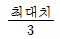
(정답률: 76%)
70. 그림과 같은 회로도의 논리식은 어떻게 되는가?
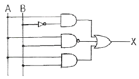
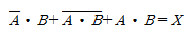
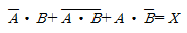
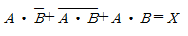
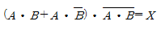
(정답률: 72%)
71. 170V, 50Hz, 3상 유도전동기의 전부하 슬립이 4%이다. 공급전압이 5% 저하된 경우의 전부하 슬립은 약 몇 %인가?
- 4.4
- 5.1
- 5.6
- 7.4
(정답률: 32%)
72. 50kVA 단상변압기 4대를 사용하여 부하에 공급할 수 있는 3상 전력은 최대 몇 kVA 인가?
- 100
- 150
- 173
- 200
(정답률: 59%)
73. 그림과 같은 평형 3상 회로에서 전력계의 지시가 100W 일 때 3상 전력은 몇 W 인가? (단, 부하의 역률은 100%로 한다.)
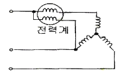
- 100√2
- 100√3
- 200
- 300
(정답률: 61%)
74. 그림(a)의 직렬로 연결된 저항회로에서 입력전압 Vi와 출력전압 Vo의 관계를 그림(b)의 블록선도로 나타낼 때 A에 들어갈 전달함수는?
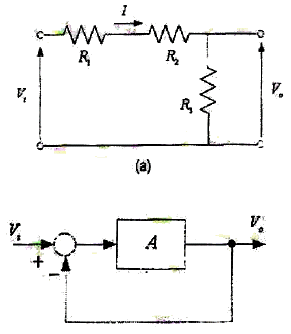
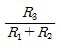
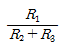
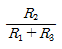
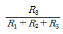
(정답률: 60%)
75. 기계적 추치제어계로 그 제어량이 위치, 각도 등인 것은?
- 자동조정
- 정치제어
- 프로그래밍제어
- 서보기구
(정답률: 74%)
76. 그림은 VVVF를 이용한 속도 제어회로의 일부이다. 회로의 설명 중 옳은 것은?
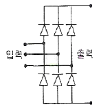
- 교류를 직류로 변환하는 정류회로이다.
- 교류의 PWM 제어회로이다.
- 교류의 주파수를 변환하는 회로이다.
- 교류의 전압으로 변환하는 인버터회로이다.
(정답률: 63%)
77. 계단응답이 입력신호와 파형이 같고 크기만 증가 하였다. 이계의 요소는?
- 미분요소
- 비례요소
- 1차 뒤진요소
- 2차 뒤진요소
(정답률: 57%)
78. 3상 농형유도전동기의 특징으로 틀린 것은?
- 슬립링이나 브러시 등을 사용하지 않으므로, 간단하 구조로 고장이 적으며, 유지보수가 간단하다.
- 회전자의 구조가 간단하여 제작이 쉽다.
- 사용전원을 직접 입력하여 운전시, 발생토크와 고정자 정류사이에는 선형관계가 성립하지 않는다.
- 기동시에는 회전자장을 만들 수 없어 기동장치를 필요로 한다.
(정답률: 51%)
79. 다음 블록선도로 제어계를 구성하여, 계단함수 1/s를 입력하였다. 이때 시간이 충분히 지나 제어계가 정상상태가 되었을 때의 출력은?
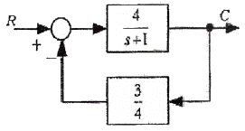
- 0
- 1
- 4
- 8
(정답률: 47%)
80. 제어명령을 증폭시켜 직접 제어대상을 제어시키는 부분을 무엇이라 하는가?
- 조작부
- 전송부
- 검출부
- 조절부
(정답률: 64%)